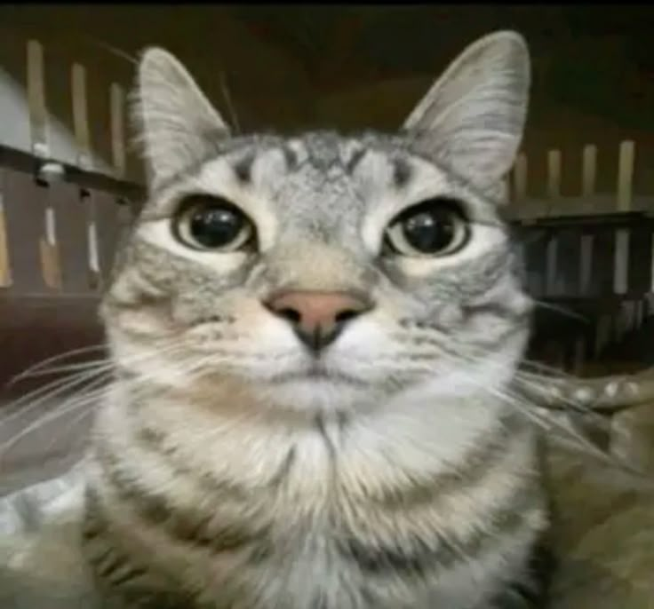
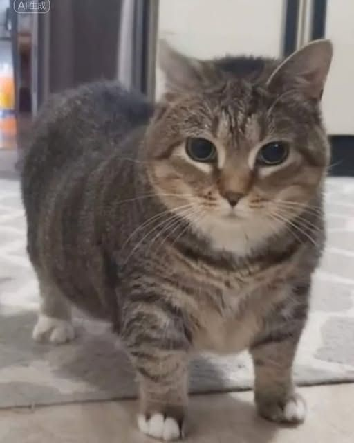
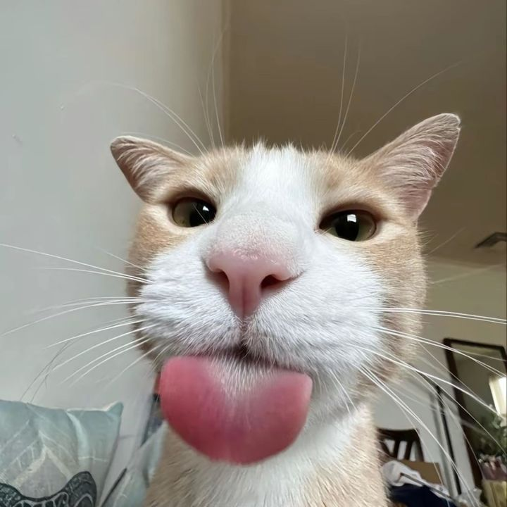

Adăpost pentru Suflete Blânde
Un loc sigur pentru pisicile abandonate, unde dragostea și grija reîncep
Pisici Vedetă
Câteva dintre sufletele care ne-au atins inima

Luna
O pisică jucăușă care adoră să toarcă în brațele voluntarilor.

Milo
Salvat din stradă, acum este un răsfățat al sanctuarului.

Sasha
Un suflet timid, dar blând, care și-a găsit liniștea aici.
Ce Poți Face
Fii parte din povestea noastră
Adoptă o Pisică
Oferă unei pisici un cămin iubitor.
Devino Voluntar
Ajută-ne în activitățile zilnice și în îngrijirea pisicilor.
Donează
Orice sprijin financiar ne ajută să salvăm mai multe vieți.
Educație & Campanii
Participă la evenimentele noastre de conștientizare și informare.
Misiunea Noastră
Scopul nostru este să oferim adăpost, îngrijire medicală și iubire pisicilor abandonate. Credem că fiecare viață contează și merită o a doua șansă.
100+
Pisici Salvate
50+
Adopții Reușite
30
Voluntari Implicați